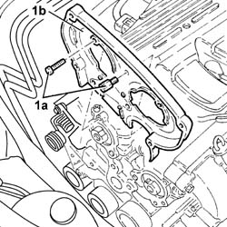
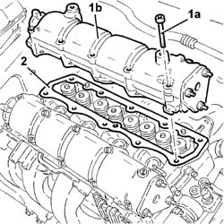

1016B26 rh cylinder head extension -r r with timing belt removed -replace gasket
- Path
- Procedures > 10 ENGINE > 1016 CYLINDER HEAD(S) > 1016B cylinder head extension(s) > 1016B26 rh cylinder head extension -r r with timing belt removed -replace gasket
- Kind
- repair procedure (removal / refitting; the operation number is the code)
- Applies to
- all engines; all production periods
- Interactive page
- https://sloeber94.github.io/elrnDB-fDbl/en/#/2584339
Applies to: all engines; all production periods
 Removing
Removing
 Refitting
RefittingPlace the car on the ramp.
Disconnect the battery negative terminal.
 | Name | Connector |
|---|---|---|
- | Battery | A1 |
1048A32 sleeve from air cleaner to intake manifold - r + r
1072B50 sleeves connecting air capacity box to inlet manifold is - r+r
1032B40 toothed-driven pulley (one) - r + r with timing belt removed
1. Undo the bolts (1a) and remove the upper rear shield (1b) for the timing belt.

Applies to: all engines; all production periods
1. Unscrew bolts (1a) and remove right cylinder head extension (1b).
2. Remove the right cylinder head extension gasket.

Applies to: all engines; all production periods
Refitting
RemovingRefit a new right cylinder head extension gasket.
Place the right camshaft housing back in its housing and secure it tightening the bolts to the recommended torque.
 | Fastening | Component | Ø | Value (daNm) |
|---|---|---|---|---|
- | Bolt | RIGHT CYLINDER HEAD EXTENSION | M8 | 1.5 |
Place the upper rear timing belt shield back in its housing and secure it using the bolts.
1032B40 toothed-driven pulley (one) - r + r with timing belt removed
1072B50 sleeves connecting air capacity box to inlet manifold is - r+r
1048A32 sleeve from air cleaner to intake manifold - r + r
Connect the battery negative terminal.
| Name | Connector |
|---|---|---|
- | Battery | A1 |
Remove the car from the ramps.
Topics linked from this page (3)
- 1032B40 toothed-driven pulley (one) - r + r with timing belt removed
- 1048A32 sleeve from air cleaner to intake manifold - r + r
- 1072B50 sleeves connecting air capacity box to inlet manifold is - r+r